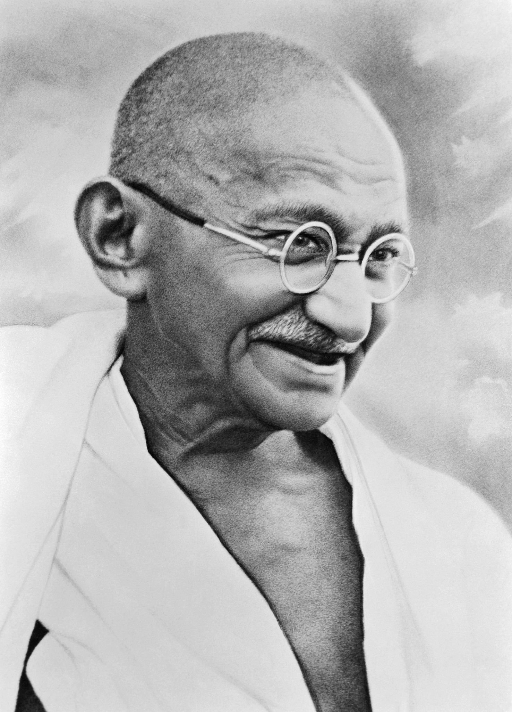

-The weak can never forgive. Forgiveness is the attribute of the strong.
Mohandas Karamchand Gandhi
1869 - 1948
"Gandhi Jayanti is celebrated on October 2nd every year to commemorate the birth of Mahatma Gandhi, the Father of the Nation."
"Gandhi led India to independence and inspired movements for civil rights and freedom across the world."
"The honorific title Mahatma—meaning "high-souled"—was bestowed on him first in 1914 in South Africa, and became widely used in India in the 1920s. He is internationally honored as the Father of India."
“If we could change ourselves, the tendencies in the world would also change. As a man changes his own nature, so does the attitude of the world change towards him. We need not wait to see what others do.”
“A man is but the product of his thoughts. What he thinks, he becomes.”
“You must not lose faith in humanity. Humanity is like an ocean; if a few drops of the ocean are dirty, the ocean does not become dirty.”
“Happiness is when what you think, what you say, and what you do are in harmony.”
“Your beliefs become your thoughts, Your thoughts become your words, Your words become your actions, Your actions become your habits, Your habits become your values, Your values become your destiny.”